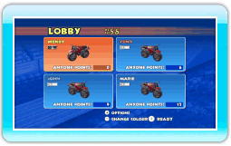
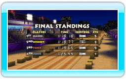

17 |
De Race Anyone-stand |
 |
|
In de Race Anyone-stand kun je het opnemen tegen mensen van over de hele wereld via de Nintendo Wi-Fi Connection.
Kies de kleur van je motor in het lobbyscherm met
 . Druk op . Druk op  om je keuze te bevestigen. Als je de lobby wilt verlaten, druk je op om je keuze te bevestigen. Als je de lobby wilt verlaten, druk je op  om het lobbymenu te openen en kies je DISCONNECT (verbinding verbreken). om het lobbymenu te openen en kies je DISCONNECT (verbinding verbreken).
 Kies een parkoers uit de lijst met vrijge-speelde parkoersen. Je kunt ook kiezen voor RANDOM (willekeurig). Zodra elke speler een keuze heeft gemaakt, wordt een van de gekozen parkoersen willekeurig geselecteerd. Kies een parkoers uit de lijst met vrijge-speelde parkoersen. Je kunt ook kiezen voor RANDOM (willekeurig). Zodra elke speler een keuze heeft gemaakt, wordt een van de gekozen parkoersen willekeurig geselecteerd.
Als de race voorbij is, ontvang je Anyone Points (wie-dan-ook-punten) op basis van je positie op de ranglijst. Anyone Points kunnen gebruikt worden om speciale ontwerpen voor je motor te kopen.
|
 |
 |
 |